Bouquets de mariée, cérémonies, arches et centres de table, imaginés à partir de votre histoire.
Fleuriste diplômée, avec plus de 14 ans d’expérience, Isa compose dans son atelier du Tampon des fleurs pour les mariages et les événements uniques, et livre sur toute l’île.
« J’imagine des compositions florales qui s’adaptent à votre univers : bouquet de mariée, cérémonie, arche florale, centres de table ou encore décoration de réception. »
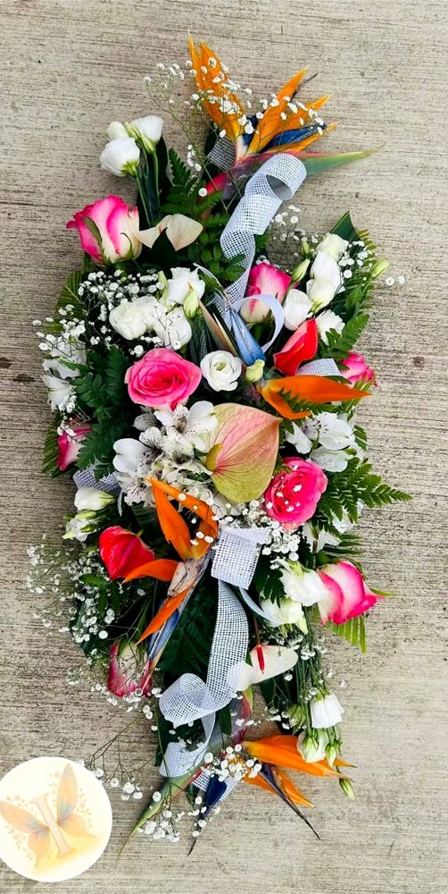
Une cliente a apporté ses propres vases en coquillages, et Isa y a fait éclore des compositions tropicales aux couleurs du soleil couchant. Le sur-mesure, jusque dans le contenant.
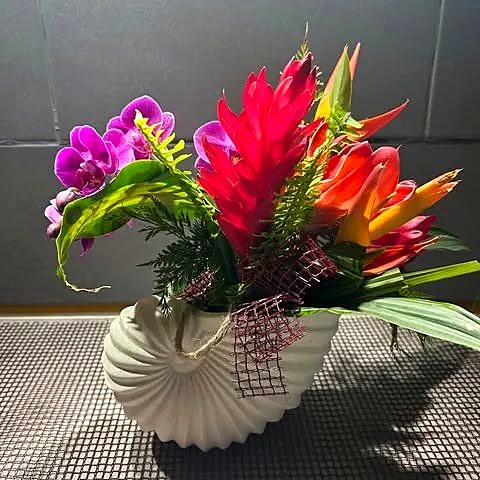
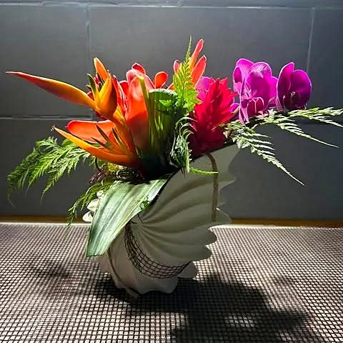
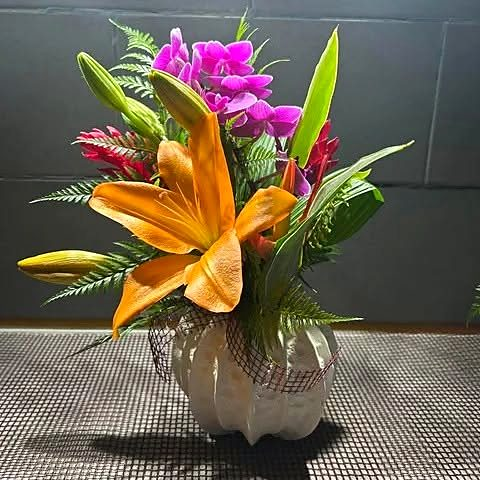
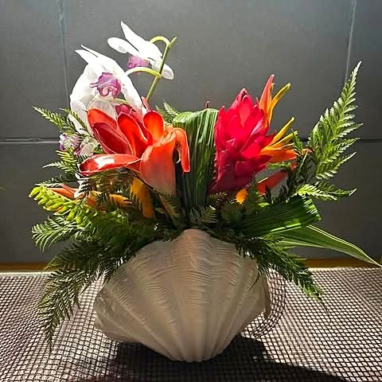
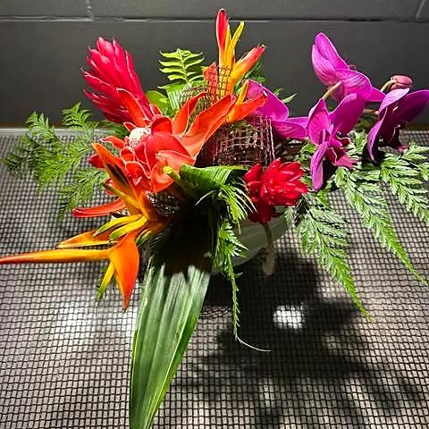
Faites glisser pour voir les compositions
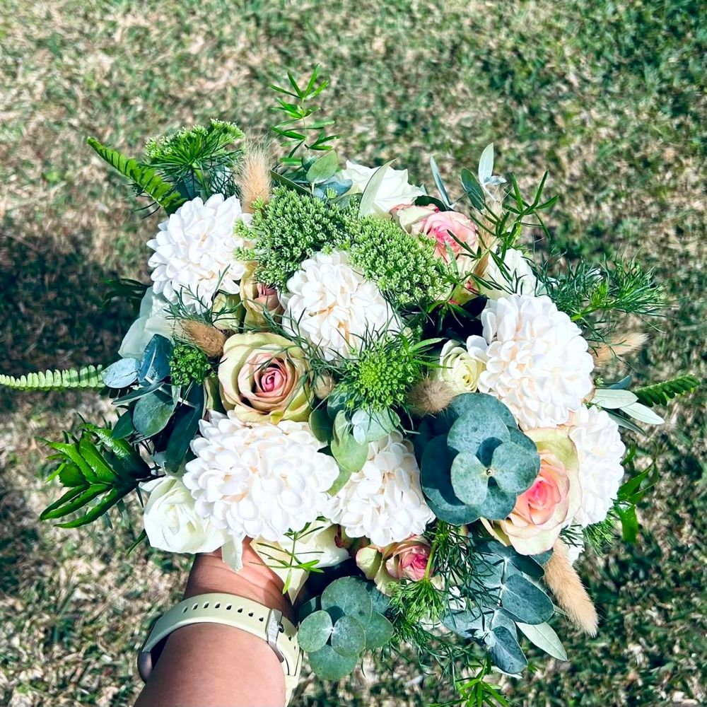
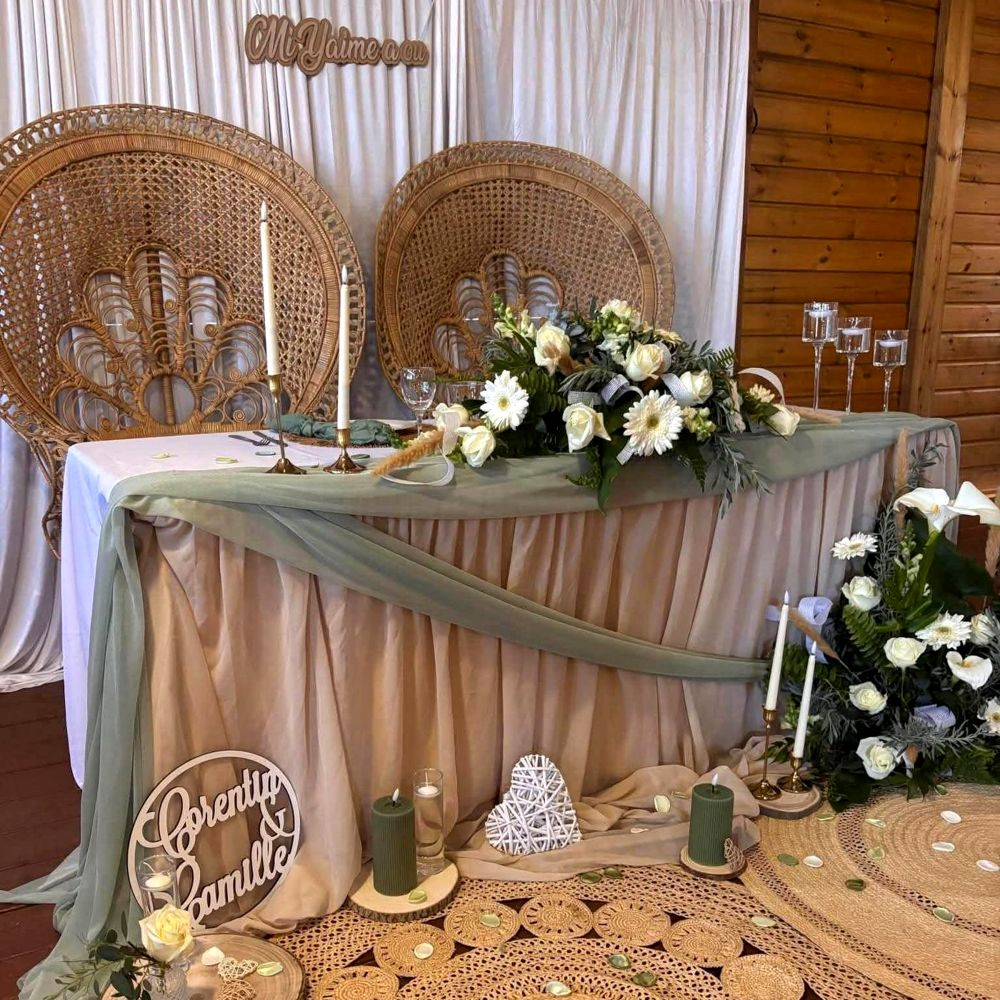
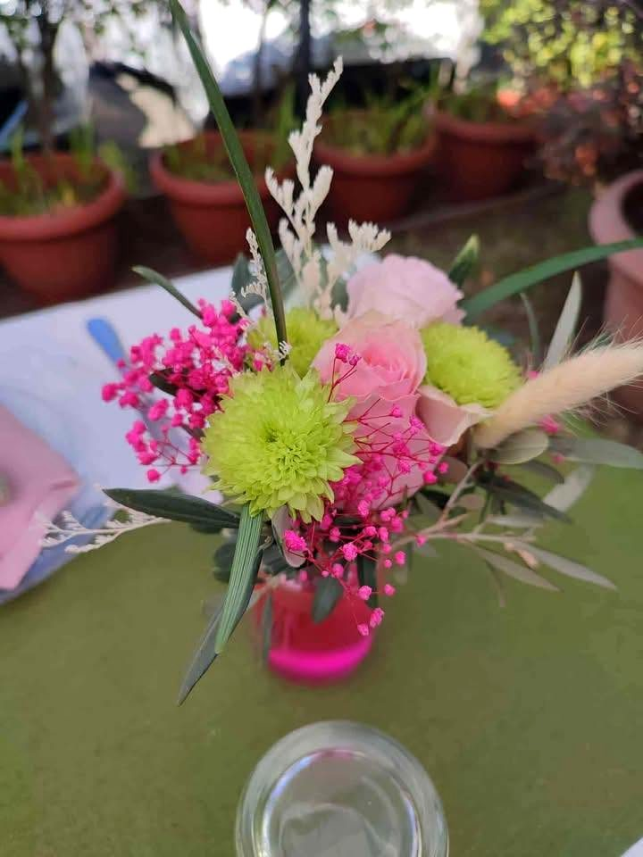
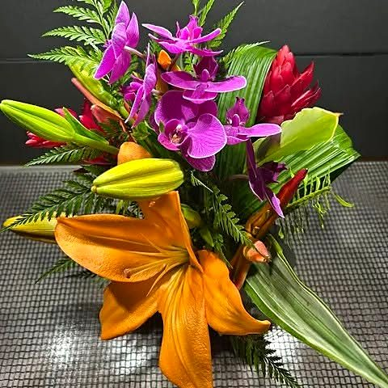
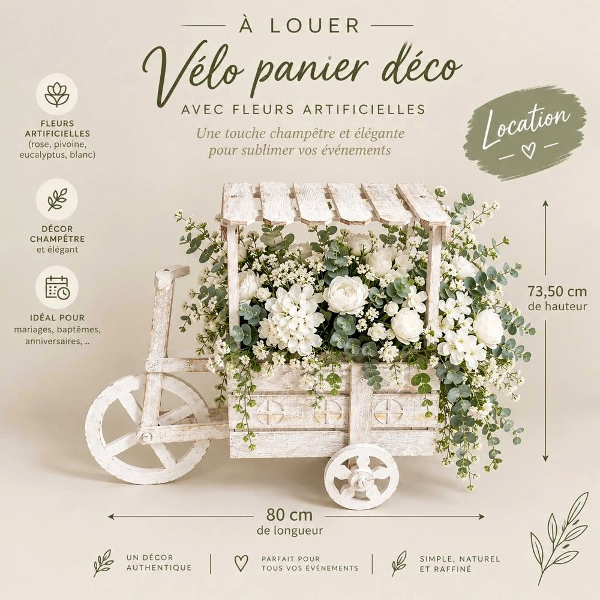
Pour une entrée de cérémonie, un coin photo ou un vin d’honneur : le vélo fleuri d’Isa se loue et apporte tout de suite une note bohème à la fête.